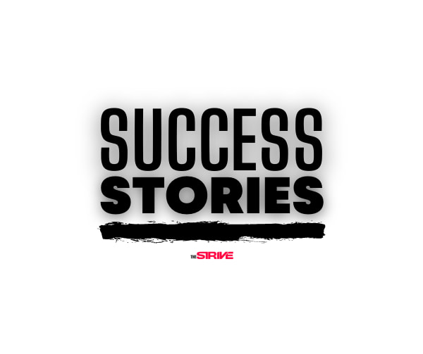
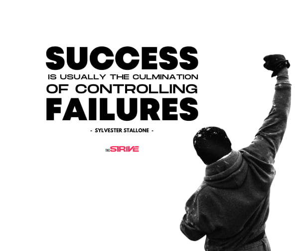
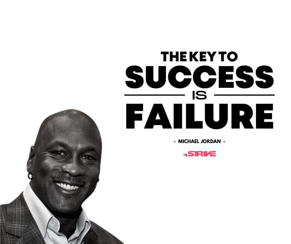
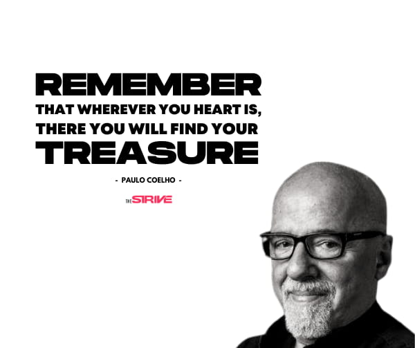
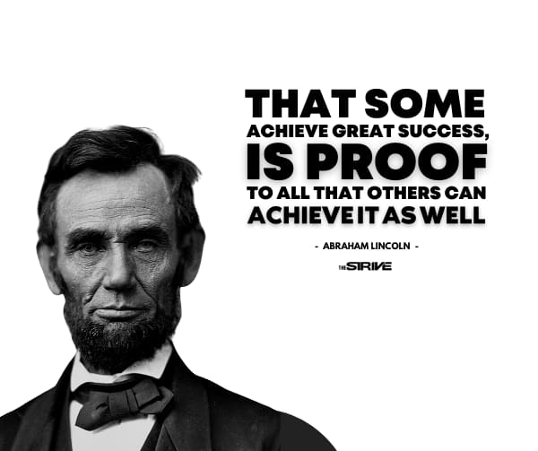
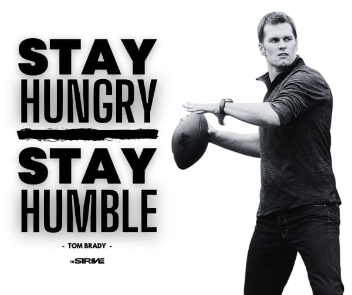

INSPIRATIONAL SUCCESS STORIES TO KEEP YOU STRIVING FOR YOUR DREAMS
Success, it’s something we all strive for in some form or fashion, but what is it? What is success?
There are multiple definitions these days. However, there seems to be just one common thread that most
people do agree on about success. And that is this, that success is a biproduct of persisting in the face of
failure. So, that is what we hope to share with you on this page, inspirational success stories that clearly
reveal the road commonly travelled by people who have achieved staggering success.
Our purpose in sharing these success stories is that they may encourage you to keep striving towards your
dreams, and keep you believing that achieving the “impossible” is actually possible.
With that being said, here are the top success stories to inspire you to succeed in the face of failure,
setbacks, and obstacles. If you are ready to be inspired, let’s dive in.
Inspiring Success Stories to Help You Succeed

1. Sylvester Stallone
Sylvester Stallone has one of the most inspiring success stories. Before he made it big, he was
essentially a starving artist. For many years after during and after his college years, he worked odd
jobs to pay the bill while simultaneously taking on any acting roles he could find to keep his dreams of
becoming a successful actor alive.
Success, it’s something we all strive for in some form or fashion, but what is it? What is success?
There are multiple definitions these days. However, there seems to be just one common thread that most
people do agree on about success. And that is this, that success is a biproduct of persisting in the
face of failure. So, that is what we hope to share with you on this page, inspirational success stories
that clearly reveal the road commonly travelled by people who have achieved staggering success.
Our purpose in sharing these success stories is that they may encourage you to keep striving towards
your dreams, and keep you believing that achieving the “impossible” is actually possible.
With that being said, here are the top success stories to inspire you to succeed in the face of failure,
setbacks, and obstacles. If you are ready to be inspired, let’s dive in.
Inspiring Success Stories to Help You Succeed
inspirational success stories

2. Arnold Schwarzenegger
Considering Arnold Schwarzenegger is the epitome of the self-made man, we wouldn’t dare exclude him from
our success stories collection. Having been born and raised in Austria, at a time where it was still healing
from it’s defeat in World War II, the odds were already stacked against Arnold. He grew up in a climate
where alcoholism was rampant, where defeatism was the norm, and big dreaming was laughed at.
But Arnold didn’t care. He knew he didn’t want to live the traditional Austrian life his parents wanted for
him, and he knew he wanted to move to America, the land of the free.
As such, he hatched a plan to become a success in body-building, and then use that success to get into
movies. And sure enough he did just that. He went on to fulfill his vision by becoming the youngest man to
ever win a Mr. Universe competition, and then on to win five Mr. Universe titles and seven Mr. Olympia
titles.
After reaching what he set out to do in the sport of bodybuilding, he then went on to commit himself to the
acting career he had always dreamed of. And sure enough, he would go on to conquer the film industry to the
same degree that he conquered the body building world. Going on to star in multiple blockbuster movies that
would gross over $3 billion, and earn him one of the most sizeable net worth’s in Hollywood.
You can find a more complete account of Arnold’s inspiring success story here.
3. JK Rowling
JK Rowling had a dream of becoming a writer early on. But, she would have to persist for many years before her
dream of becoming a published author would materialize. Almost as soon as she decided to get to work on
putting her ideas down on paper for her book, she would be sidetracked by her mother’s death. And the
depression that would ensue left Rowling seeking out a job as a teacher in another country. Soon after, she
would get married and have a child, which would delay her aspirations even further.
But things weren’t done going off the rails for Rowling, as her marriage would abruptly end just one year
after it began, leading her to be jobless with a child, and a barely surviving off of unemployment benefits.
However, despite her challenges, Rowling would persist in the creation of her book. And she did so by
seizing every spare moment she could while her child slept to write. Until finally the day came when she
completed her manuscript.
Of course, even after Rowling finished her manuscript obstacles still remained. 12 different publishers
would reject her novel, and she found herself almost ready to quit before her manuscript would eventually
get accepted. And it was at that moment, that J.K. Rowling’s luck turned around.Now, J.K. Rowling is now one
of the best selling authors of all time. In fact, she is the highest paid novelist in the world, with her
books having been translated into over 80 different languages with over 500 million being sold. Clearly,
persistence and patience pays off in the long run.
4. Steven Spielberg
Most people don’t know this, but Steven Spielberg was rejected from film school three times. But he
didn’t let those rejections stop him, and he kept applying till he got accepted. Eventually Cal State, Long
Beach would accept him into their film program. He then leveraged his opportunity at Cal State to land an
unpaid internship at Universal Studios.Of course, this internship wouldn’t last forever, but it lasted just
long enough for him to learn how sneak in to the studios undetected so he could continually gather intel on
what it would take to become successful in the business.
Finally, the day would come that he managed to get a film he created in the hands of film executives. But,
he had to first overcome the film executives multiple attempts to make him give up.
After being told that the film size was not the right size multiple times, and remaking the entire demo to
the recommended sizes every time, the executives finally relented and gave him his film a shot. The movie
would go on to win major awards, and solidified Steven Spielberg’s place within the industry.
Steven Spielberg is now one of the most influential film makers in history and one of the wealthiest
filmmakers in the world. And out of all of our inspirational stories of success, his story in particular,
shows, that if you knock long enough and hard enough, the doors of opportunity will eventually swing open
for you.
5. Cristiano Ronaldo
Cristiano Ronaldo grew up in a household that was barely getting by. As a child, he had to share a room
with three of his siblings due to their meager financial situation. There were even times where they didn’t
have enough money to buy a soccer ball just so he could play in the streets. But Ronaldo did not let his
environment dictate his destiny.
No, instead he would find ways to play the sport he loved even without the ball. He would use bottles, rags,
or pretty much anything he could find to make a makeshift ball just so he could play.
Eventually, Cristiano would get so good at soccer, that he would have to make the ultimate sacrifice at the
age of 11 to move over 500 miles away from his family to train with a prestigious soccer academy. It’s a
good thing he did too, because by doing so, he put himself on track to eventually become on of the best
players in history.
Now Cristiano Ronaldo is known as the greatest Portuguese player of all time by the Portuguese Football
federation. He is also considered by millions of soccer fans all across the globe to be the greatest of all
time.
In addition to this, he is the first soccer player ever to earn over $1 billion dollars, while generating
one of the largest net worth’s among professional athletes.
If you’re looking to learn more about Cristiano’s inspiring success story, you’ll love this.
6. Lionel Messi
Since we are on the topic of soccer, we might as well mention Lionel Messi’s success story because it’s
is every bit as inspiring. Here’s why, at age of 11, Messi was cut from his soccer team because they thought
he was too small to play. And he was small, but it was because he had a growth hormone deficiency which made
him a lot smaller than all the other kids his age.
Fortunately, Messi didn’t let this deter him. Instead, he would place himself on a strict regimen where he
would inject growth hormones into himself. And he would go on to do inject himself with this hormone for
seven days in one leg, and then seven days in the other.
Messi would keep this routine up for six years.
The great news is, Messi’s sacrifice and persistence paid off. Because now, he is one of the highest paid
soccer players with a staggering net worth, and is considered by legions of fans to be one of the best
soccer players of all time due to his winning soccer’s highest achievement, ‘The Ballon d’Or’ six times.
Success requires sacrifice.
7. Michael Jordan
Since we mentioned the greatest of all time in soccer, we can’t leave out the man many consider to be
the greatest of all time in basket ball. Now, most people aren’t’ aware of this, but when Michael Jordan was
merely a sophomore in high school, he already had big dreams of being a great basketball player. So he did
something brash and tried out for the Varsity team. But, things didn’t go his way and he got himself cut
from the team.
This rejection hit Jordan especially hard because of his oversized dreams and expectations. In fact, the
rejection hit him so hard he went home afterwards and cried in his closet.
Even though that rejection still bothered Jordan, he dusted himself off and went all in for the JV team. He
trained like no other in the off season and grew four extra inches. And the following year he tried out for
the varsity team again. But this second time around, he made it.
Not only did he make it, but he went on to become the team’s MVP, making the All-American Team, and
eventually earned himself a college scholarship. And from there, well, you know the rest of the story. He
went on to become the man who would score 32,292 points in a basketball career, acquire 6 NBA championships,
collect 5 MVP titles, and come to be considered as the greatest basketball player of all time.

8. Paulo Coelho
Over 30 years ago a book titled ‘The Alchemist’ was published and hardly anyone noticed. The author of
this book was a man named Paulo Coelho, and he was told by the first bookseller to carry his book, that only
one person bought a copy after it was released. As bad as it was to hear about the grim results Coelho
remained confident in his work.
He waited for better results to appear, but they were slow to come by as six months would pass before the
next copy would be sold. Oddly, the person who bought his first book was the same person who bought the
second.After that first year the publisher decided that the book was a flop and ended Coelho’s contract.
Fortunately, though, Coelho shrugged off that initial defeat. He made up his mind to not give in, and so he
doubled down to pursue his vision with even more fervor by finding another publisher. Now finding this new
publisher was no easy task, as he was met with rejection after rejection. But, he finally did land that new
publisher, and with it, another opportunity capture his dream.
From that point forward Coelho’s dreams started to come true. At first, he only sold three thousand books.
But the sales kept trickling in, as he then sold ten thousand, and then 100 thousand, and on and on.
Coelho’s luck has yet to run out, as his books sales continue to grow year over year, with now over 150
million and counting copies of ‘The Alchemist’ having been sold. Even more staggering is the fact that he
sold over 320 million books when counting all of his works.Paulo Coelho’s story shows that if you truly want
something bad enough, all the universe really will conspire to help you make that dream happen.

9. Abraham Lincoln
Most of us know of this great man because of what he did for our country. The Emancipation Proclamation
which led to the abolition of slavery was a massive accomplishment.
But, what most don’t realized about Abraham Lincoln, is that he has one of the most impressive rap sheets
when it comes to overcoming defeat.
In short, his success story consists of a list of failures and set backs so sizable, that you would hardly
think it belonged to one of the greatest presidents of the United States of America.
Here’s a great example of the many failures Lincoln endured, with a few victories he managed to sprinkle in
over his lifetime:1832: Lost his job
1832: Defeated for legislature
1833: Failed in business
1834: Elected to legislature
1835: The woman he loved died
1836: Had a nervous breakdown
1838: Defeated for Speaker
1843: Defeated for nomination for Congress
1848: Lost re-nomination
1849: Reject for Land Officer
1854: Defeated for Senate
1856: Defeated for nomination for Vice-President
1858: Again defeated for Senate
1860: Elected for President of The United States of America
To be sure, Lincoln failed his way to success, and his recorded failures helps us realize the truth behind
the Michael Jordan quote we mentioned earlier, and that is…that the key to success is through failure.

10. Tom Brady
One of our favorite inspirational stories of success comes from Tom Brady. Brady didn’t follow the
typical athletic path into the NFL. While most athletes begin getting groomed for the sport by the 3rd
grade, Tom Brady wouldn’t set foot onto the grid iron until the 9th grade.
In fact, his debut into actually getting onto the football field didn’t come until his Sophomore year when
the starting quarterback for the JV team quit. Fortunately for Brady, that opportunity helped him capture
the starting Varsity QB role by the time his Junior year arrived.After finding success at the high school
level, Brady would eventually go on to become a Michigan Wolverine. But success wasn’t a given for Brady at
this level. Nope, he had to earn it. In fact, Brady came into the program as an underdog, with seven other
quarterbacks ahead of him on the depth chart. After almost requesting a transfer to another school, Brady’s
determination would eventually win him the coveted starting position by the time he was a Junior.
The obstacles Brady would face continued on even into the Pros. Brady had his mind set to play in the pros,
but there was very little interest in him during the draft. In fact, Brady barely made the draft, being
chosen in the 6th round as the 199th pick.
Brady was grossly underrated and underestimated by every coach in the league. His draft report from 2000 NFL
draft actually stated the following qualities:
Poor Build | Skinny
Lacks Great Physical Stature and Strength
Lacks Mobility and Ability to Avoid The Rush
Lacks a Really Strong Arm
Can’t Drive The Ball Down Field
Doesn’t Throw a Really Tight Spiral
System-Type Player Who Can Get Exposed if Forced to Adlib
Gets Knocked Down Easily
Indeed, Tom brady was not the highest rated quarterback, he wasn’t the most well groomed for the sport, nor
was he the best athlete. In addition, he didn’t have the best numbers, or even the best mechanics. However,
Tom Brady did have the most heart and determination.
Thus, through sheer willpower, he pushed himself to becoming one of the greatest football players of all
times. And he has proved his case with the following accolades:
Most NFL Championships By a Player (7x)
Most Games Won By a Quarterback
Most Games Played By a Quarterback
Most Combined Passing Yards
Most Touchdown Passes
Most 4th Quarter Comebacks
Best Touchdown to Interception Ratio
5 Time Super Bowl MVP
3 Time MVP of the NFL
2 Time NFL All-Decade Team Player
Only Player to Win a Super Bowl for Both The AFC & NFC
